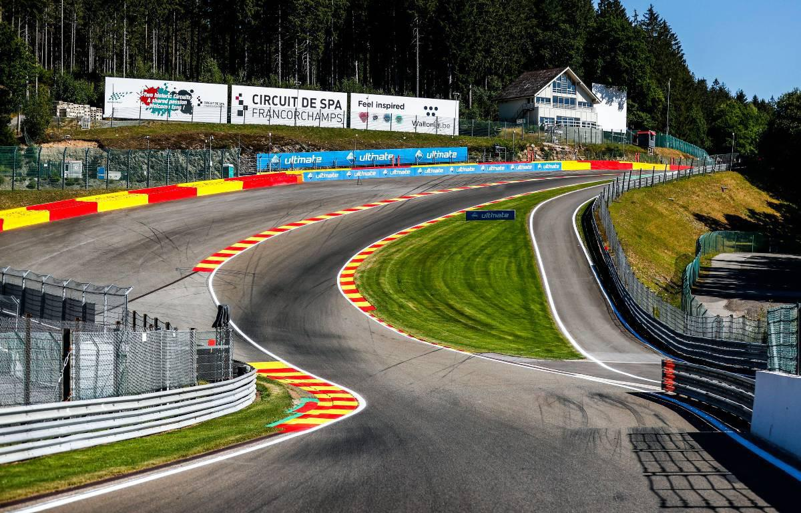
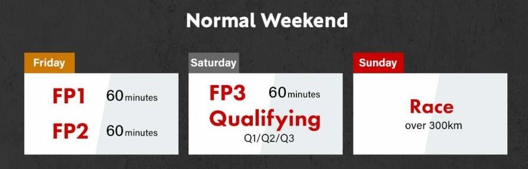
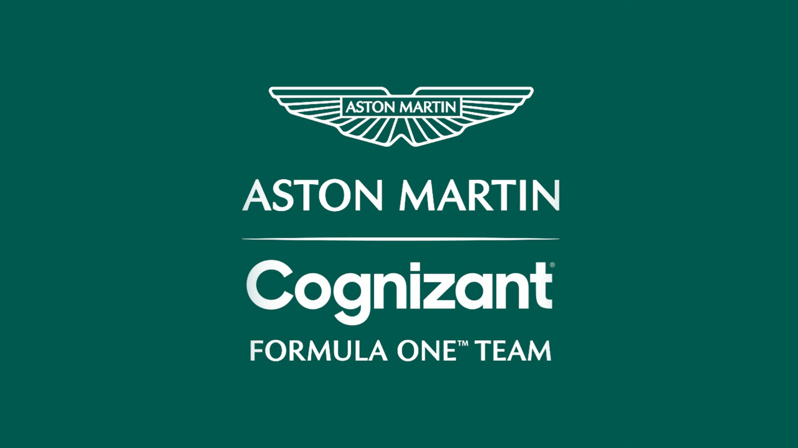

Vaker thuis, minder op school of bij vrienden zorgde ervoor dat er heel wat tijd vrij
kwam. Ik
ontdekte
een
nieuwe sport, namelijk Formule 1. Een hypersnelle sport waarbij de ingenieus
gebouwde
wagens
centraal
staan.
Tijdens een raceweekend zal je me op zondagmiddag dan ook aan de televisie gekluisterd.
Deze website neemt je mee in de Formule 1 wereld.

Eau Rouge, Spa Francorchamps
Format
jaarlijks vinden er om en bij de 20 races plaats. deze races worden over
de hele
wereld
georganiseerd.
elke
race
bestaat uit 3 grote onderdelen. Deze worden hieronder kort toegelicht. Zo begrijp hoe
zo'n raceweekend er doorgaans uitziet.

Een normaal raceweekend
Free Practice
Doorgaans vindt Free Practice 1 & 2 plaats. Op zaterdagochtend
vindt
Free
Practice
3 dan plaats. In deze 3
oefensessies, kunnen de autocoureur de wagen en het circuit uittesten en oefenen.
Qualifying
In dit onderdeel strijden de autopiloten voor hun startpositie op zondag.
Qualifying
vindt
doorgaans plaats op
zaterdagmiddag. dit onderdeel bestaat opnieuw uit 3 onderdelen, namelijk qualifying
1, 2 en 3.
In
Qualifying
1
strijden alle coureurs om de beste tijd op het bord te noteren. Na Q1 vallen de
traagste piloten
af
zodat er
nog
vijftien overblijven. In Q2 & Q3 proberen ze opnieuw de beste tijd te
noteren, maar
in Q3
komen
enkel
de beste
tien piloten nog aan bod. Na de qualifying zijn de startposities dan gekend
voor de
race op
zondag.
Race
op zondagmiddag vindt de echte race plaats, afhankelijk van de lengte van het circuit
leggen de
coureurs
50
à
70 ronden af. als eerst einndigt zal 25 punten
verdienen, de tweede
verdient dan nog 18
punten, ...
Op
het
einde van het seizoen, wordt de wereldtitel gewonnen door de piloot die het meest
punten heeft
behaald.
Tijdens de race op zondag kan er nog een extra punt verdiend worden, indien je de
snelste
ronde
rijdt en ook in
de top tien eindigt.
Teams
Er zijn op dit moment 10 teams actief in Formule 1. Teams wisselen vaak naam door
nieuwe en veranderende sponsors. De Huidige teams worden hieronder opgelijst met
hun bijhorend logo:
Alfa Romeo Racing
logo Alfa Romeo Racing
AlphaTauri
logo AlphaTauri
Alpine
logo Alpine
Aston Martin

logo Aston Martin
Ferrari
logo Ferrari
Haas F1 Team
logo Haas F1 Team
McLaren
logo McLaren
Mercedes
logo Mercedes
Red Bull Racing
logo Red Bull Racing
Williams
logo williams racing
Coureurs seizoen 2022
Elk team bouwt twee wagens en zoekt daarvoor twee gepaste piloten. Bij
tegenvallende
resultaten
kunnen deze piloten wel vervangen worden. Zo zijn er
ook
reservepiloten
die in nood de piloten
kunnen vervangen. hier een oplijsting van de racepiloten bij elk team:
Alfa Romeo Racing
Valterri Bottas
Heeft al 67 podia behaald.
Komt uit Finland.
Rijdt met het number 77.
Guanyu Zhou
Heeft al 0 podia behaald.
Komt uit China.
Rijdt met het number 24.
AlphaTauri
Pierre Gasly
Heeft al 3 podia behaald.
Komt uit Frankrijk.
Rijdt met het number 10.
Yuki Tsunoda
Heeft al 0 podia behaald.
Komt uit Japan.
Rijdt met het number 22.
Alpine
Esteban Ocon
Heeft al 2 podia behaald.
Komt uit Frankrijk.
Rijdt met het number 31.
Fernando Alonso
Heeft al 98 podia behaald.
Komt uit Spanje.
Rijdt met het number 14.
Aston Martin
Lance Stroll
Heeft al 3 podia behaald.
Komt uit Canada.
Rijdt met het number 18.
Sebastian Vettel
Heeft al 122 podia behaald.
Komt uit Duitsland.
Rijdt met het number 5.
Ferrari
Charles Leclerc
Heeft al 13 podia behaald.
Komt uit Monaco.
Rijdt met het number 16.
Carlos Sainz
Heeft al 6 podia behaald.
Komt uit Spanje.
Rijdt met het number 55.
Haas F1 Team
Mick Schumacher
Heeft al 0 podia behaald.
Komt uit Duitsland.
Rijdt met het number 47.
Nikita Mazepin
Heeft al 0 podia behaald.
Komt uit Rusland.
Rijdt met het number 9.
McLaren
Lando Norris
Heeft al 5 podia behaald.
Komt uit het Verenigd Koninkrijk.
Rijdt met het number 4.
Daniel Ricciardo
Heeft al 32 podia behaald.
Komt uit Australië
Rijdt met het number 3.
Mercedes
Lewis Hamilton
Heeft al 182 podia behaald.
Komt uit het Verenigd Koninkrijk.
Rijdt met het number 44.
George Russell
Heeft al 1 podia behaald.
Komt uit het Verenigd Koninkrijk.
Rijdt met het number 63.
Red Bull Racing
Max Verstappen
Heeft al 60 podia behaald.
Komt uit Nederland.
Rijdt met het number 1.
Sergio Perez
Heeft al 15 podia behaald.
Komt uit Mexico.
Rijdt met het number 11.
Williams
Alexander Albon
Heeft al 2 podia behaald.
Komt uit Thailand.
Rijdt met het number 23.
Nicholas Latifi
Heeft al 0 podia behaald.
Komt uit Canada.
Rijdt met het number 6.
Kalender 2022
Een Formule 1 seizoen omvat ongeveer 20 races. Om zo een race te kunnen organiseren
moeten de
circuits aan tal van regels voldoen. Op de kalender staan er meestal een paar iconische
races zoals
de race in Suzeka, Japan of de race in Spa Francorchamps in België. Enkele races
worden ook
georganiseerd door zeer rijke (olie)staten zoals Bahrein, Abu Dhabi, ... Monaco is dan
weer een
voorbeeld van een iconische race die georganiseerd wordt in een zeer rijke stadstaat. De
race in
Monaco is daarboven ook nog een stadscircuit, wat het een zeer uitzonderlijke race
maakt.